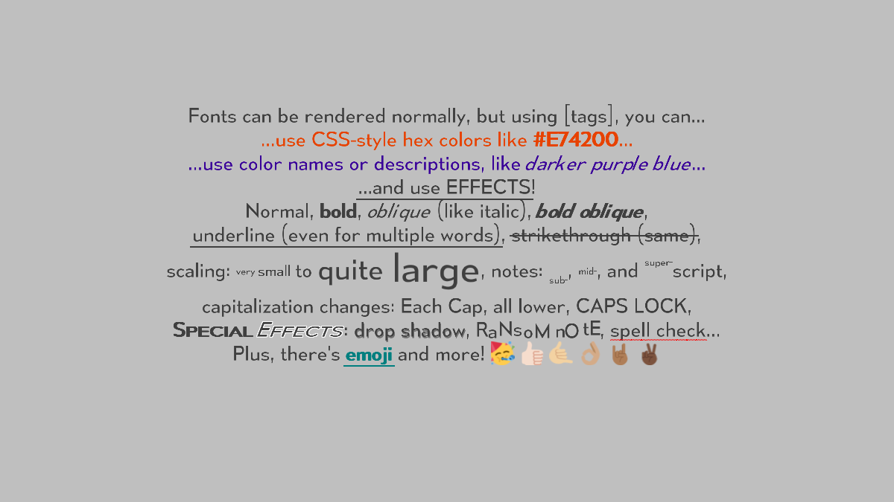

Known Fonts
A Starry

(uses width=8, height=8)
A very large fixed-width Font already configured to use a square font with 45-degree angled sections,
based on the typeface used on the Atari ST console. This font only supports ASCII, but it supports all of it.
Caches the result for later calls. The font is "a-starry", based on "Atari ST (low-res)" by Damien Guard; it is
available under a CC-BY-SA-3.0 license, which requires attribution to Damien Guard (and technically Tommy
Ettinger, because he made changes in a-starry) if you use it.
Needs files:
A Starry Tall

(uses width=8, height=16)
The above A Starry also looks good if you scale it so its height is twice its width. For small sizes, you should stick to
multiples of 8. This "A Starry Tall" version is present in getAll() and getAllStandard(). This font only supports ASCII,
but it supports all of it. Caches the result for later calls. The font is "a-starry", based on "Atari ST (low-res)" by
Damien Guard; it is available under a CC-BY-SA-3.0 license, which requires attribution to Damien Guard (and technically Tommy
Ettinger, because he made changes in a-starry) if you use it.
Needs files:
A Starry using MSDF
.png)
(uses width=10, height=10, crispness=2.0)
A Font already configured to use a square font with 45-degree angled sections, based on the
typeface used on the Atari ST console, that should scale cleanly to many sizes. This font only supports ASCII,
but it supports all of it. Caches the result for later calls. The font is "a-starry", based on "Atari ST
(low-res)" by Damien Guard; it is available under a CC-BY-SA-3.0 license, which requires attribution to Damien
Guard (and technically Tommy Ettinger, because he made changes in a-starry) if you use it. This uses the
Multi-channel Signed Distance Field (MSDF) technique as opposed to the normal Signed Distance Field technique,
which gives the rendered font sharper edges and precise corners instead of rounded tips on strokes.
If you only need sizes in small integer multiples of 8 pixels, you might get sharper-looking results from
getAStarry().
Needs files:
Bitter

(uses width=33, height=30)
A Font already configured to use a light-weight variable-width slab serif font with good Latin and
Cyrillic script support, that should scale pretty well from a height of about 160 down to a height of maybe 30.
Caches the result for later calls. The font used is Bitter, a free (OFL) typeface by The Bitter Project.
It supports quite a lot of Latin-based scripts and Cyrillic, but does not really cover Greek or any other
scripts. This font can look good at its natural size, which uses width roughly equal to height,
or squashed so height is slightly smaller. Bitter looks very similar to Gentium, except that Bitter
is quite a bit lighter, with thinner strokes and stylistic flourishes on some glyphs.
This uses a very-large standard bitmap font, which lets it be scaled down nicely but not scaled up very well.
This may work well in a font family with other fonts that do not use a distance field effect.
Needs files:
Canada1500

(uses width=30, height=35)
A Font already configured to use a very-legible variable-width font with strong support for Canadian
Aboriginal Syllabic, that should scale pretty well from a height of about 86 down to a height of maybe 30.
Caches the result for later calls. The font used is Canada1500, a free (public domain, via CC0) typeface by Ray
Larabie. It supports quite a lot of Latin-based scripts, Greek, Cyrillic, Canadian Aboriginal Syllabic, arrows,
many dingbats, and more. This font can look good at its natural size, which uses width roughly equal to height,
or narrowed down so width is smaller.
This uses a very-large standard bitmap font, which lets it be scaled down nicely but not scaled up very well.
This may work well in a font family with other fonts that do not use a distance field effect.
Needs files:
Cascadia Code Mono

(uses width=10, height=20)
A Font already configured to use a quirky fixed-width font with good Unicode support
and a humanist style, that should scale well from a height of about 60 pixels to about 15 pixels.
Caches the result for later calls. The font used is Cascadia Code Mono, an open-source (SIL Open Font
License) typeface by Microsoft (see Microsoft's page).
It supports a lot of glyphs, including most extended Latin, Greek, Braille, and Cyrillic.
This uses a fairly-large standard bitmap font, which lets it be scaled down nicely but not scaled up very well.
This may work well in a font family with other fonts that do not use a distance field effect.
Needs files:
Cascadia Code Mono using MSDF
.png)
(uses width=10, height=20)
A Font already configured to use a quirky fixed-width font with good Unicode support
and a humanist style, that should scale cleanly to even very large sizes (using an MSDF technique).
Caches the result for later calls. The font used is Cascadia Code Mono, an open-source (SIL Open Font
License) typeface by Microsoft (see Microsoft's page).
It supports a lot of glyphs,
including most extended Latin, Greek, Braille, and Cyrillic. This uses the Multi-channel Signed Distance
Field (MSDF) technique as opposed to the normal Signed Distance Field technique, which gives the rendered font
sharper edges and precise corners instead of rounded tips on strokes.
Needs files:
Caveat

(uses width=32, height=32)
A Font already configured to use a variable-width handwriting font with support for extended Latin and
Cyrillic, that should scale pretty well from a height of about 160 down to a height of maybe 20. It will look
sharper and more aliased at smaller sizes, but should be relatively smooth at a height of 32 or so. This is a
sort of natural handwriting, as opposed to the formal script in Tangerine.
Caches the result for later calls. The font used is Caveat, a free (OFL) typeface designed by Pablo Impallari.
This uses a very-large standard bitmap font, which lets it be scaled down nicely but not scaled up very well.
This may work well in a font family with other fonts that do not use a distance field effect.
Needs files:
Cozette

(uses width=6, height=17, useIntegerPositions(true); this size is small enough to make the scaled text unreadable in some places)
Returns a Font configured to use a cozy fixed-width bitmap font,
Cozette by slavfox. Cozette has broad coverage of Unicode,
including Greek, Cyrillic, Braille, and tech-related icons. This does not scale well except to integer
multiples, but it should look very crisp at its default size of 6x17 pixels. This defaults to having
integerPosition set to true, which currently does nothing (the code that enforces integer positions
seems to ruin the appearance of any font that uses it, so that code isn't ever used now).
This may work well in a font family with other fonts that do not use a distance field effect.
Needs files:
DejaVu Sans Mono using MSDF
.png)
(uses width=9, height=20, crispness=2.0)
A nice old standby font with very broad language support, DejaVu Sans Mono is fixed-width and can be clearly
readable but doesn't do anything unusual stylistically. It really does handle a lot of glyphs; not only does this
have practically all Latin glyphs in Unicode (enough to support everything from Icelandic to Vietnamese), it has
Greek (including Extended), Cyrillic (including some optional glyphs), IPA, Armenian (maybe the only font here to
do so), Georgian (which won't be treated correctly by some case-insensitive code, so it should only be used if
case doesn't matter), and Lao. It has full box drawing and Braille support, handles a wide variety of math
symbols, technical marks, and dingbats, etc. This uses the Multi-channel Signed Distance
Field (MSDF) technique as opposed to the normal Signed Distance Field technique, which gives the rendered font
sharper edges and precise corners instead of rounded tips on strokes.
Needs files:
Gentium

(uses width=31, height=35)
A Font already configured to use a variable-width serif font with excellent Unicode support, that should
scale well from a height of about 132 down to a height of 34. Caches the result for later calls. The font used is
Gentium, an open-source (SIL Open Font License) typeface by SIL (see
SIL's page on Gentium here). It supports a lot of glyphs,
including quite a bit of extended Latin, Greek, and Cyrillic, as well as some less-common glyphs from various
real languages. This does not use a distance field effect, as opposed to Gentium SDF or MSDF. You may want
to stick using just fonts that avoid distance fields if you have a family of fonts.
You can also use KnownFonts.getStandardFamily() to obtain a variant on this Font that has a FontFamily already.
Needs files:
Gentium using MSDF
.png)
(uses width=50, height=45, crispness=3, adjustLineHeight(0.625f))
A Font already configured to use a variable-width serif font with excellent Unicode support, that should
scale cleanly to even very large sizes (using an MSDF technique). You usually will want to reduce the line height
of this Font after you scale it; using KnownFonts.getGentiumMSDF().scaleTo(55, 45).adjustLineHeight(0.8f)
usually works. Caches the result for later calls. The font used is Gentium, an open-source (SIL Open Font
License) typeface by SIL (see SIL's page on Gentium here). It
supports a lot of glyphs, including quite a
bit of extended Latin, Greek, and Cyrillic, as well as some less-common glyphs from various real languages. This
uses the Multi-channel Signed Distance Field (MSDF) technique as opposed to the normal Signed Distance Field
technique, which gives the rendered font sharper edges and precise corners instead of rounded tips on strokes.
Needs files:
Gentium using SDF
.png)
(uses width=50, height=45, crispness=1.5, adjustLineHeight(0.625f))
A Font already configured to use a variable-width serif font with excellent Unicode support, that should
scale cleanly to even very large sizes (using an SDF technique). You usually will want to reduce the line height
of this Font after you scale it; using KnownFonts.getGentiumSDF().scaleTo(55, 45).adjustLineHeight(0.625f)
usually works. Caches the result for later calls. The font used is Gentium, an open-source (SIL Open Font
License) typeface by SIL (see SIL's page on Gentium here). It
supports a lot of glyphs, including quite a
bit of extended Latin, Greek, and Cyrillic, as well as some less-common glyphs from various real languages. This
uses the Signed Distance Field (SDF) technique, which may be slightly fuzzy when zoomed in heavily, but should be
crisp enough when zoomed out.
Needs files:
Gentium Un-Italic

(uses width=60, height=36)
Returns a Font already configured to use a variable-width "italic-like" serif font with excellent Unicode
support, that should scale well from a height of about 97 down to a height of 30.
Caches the result for later calls. The font used is Gentium, an open-source (SIL Open Font License) typeface by
SIL (see SIL's page on Gentium here), but this took Gentium
Italic and removed the 8-degree slant it had, so it looks like a regular face but with the different serif style
and the "flow" of an italic font. This helps it look closer to carefully-hand-written text mixed with a serif
typeface, and may fit well as a main-text font for medieval or Renaissance-period games while something like
Kingthings Foundation is used for titles or headers. It supports a lot of glyphs, including quite a
bit of extended Latin, Greek, and Cyrillic, as well as some less-common glyphs from various real languages. Even
though glyphs are not especially wide here, this Font does need to be configured with a much larger width than
height to be readable. This does not use a distance field effect. You may want to stick using just fonts that
avoid distance fields if you have a family of fonts.
Thanks to Siavash Ranbar, who came up with the idea to take an italic version of a serif font and remove its
slant, keeping the different flow from a simple oblique font.
Needs files:
Go Noto Universal

(uses width=66, height=33)
Returns a Font already configured to use a variable-width sans-serif font with extreme pan-Unicode support, that
should scale cleanly to medium-small sizes (but not large sizes). Caches the result for later calls. The
font used is Go Noto Universal, an open-source (SIL Open Font License) typeface that modifies Noto Sans by Google
(see Go Noto Universal's page is here, and
Noto Fonts have a page here). It supports... most glyphs, from many
languages, including essentially all extended Latin, Greek, Cyrillic, Chinese, Japanese, Armenian, Ethiopic,
Cherokee, Javanese... Most scripts are here, though not Hangul (used for Korean). This also has symbols for math,
music, and other usage. Unlike getGoNotoUniversalSDF(), the SDF version, the standard version should have
a stable baseline. The texture this uses is larger than many of the others here, at 4096x4096 pixels, but the
file isn't too large; in fact, the 2048x2048 textures Gentium-msdf.png and Twemoji.png are each larger than
GoNotoUniversal-standard.png . The .fnt has 21274 glyphs plus extensive kerning info, though, so it is large.
Needs files:
Go Noto Universal using SDF
.png)
(uses width=43.25, height=34, setCrispness(1.8f))
Returns a Font already configured to use a variable-width sans-serif font with extreme pan-Unicode support, that
should scale cleanly to even very large sizes (using an SDF technique). Caches the result for later calls. The
font used is Go Noto Universal, an open-source (SIL Open Font License) typeface that modifies Noto Sans by Google
(see Go Noto Universal's page is here, and
Noto Fonts have a page here). It supports... most glyphs, from all
languages, including essentially all extended Latin, Greek, Cyrillic, Chinese, Japanese, Korean, Armenian,
Ethiopic, Canadian Aboriginal scripts, Yi, Javanese... Pretty much every script is here, plus symbols for math,
music, and other usage. The baseline may be slightly uneven at larger sizes, but should even out when height is
less than 40 or so. This uses the Signed Distance Field (SDF) technique, which may be slightly fuzzy when zoomed
in heavily, but should be crisp enough when zoomed out. The texture this uses is larger than many of the others
here, at 4096x4096 pixels, but the file isn't too large; in fact, the 2048x2048 textures Gentium-msdf.png and
Twemoji.png are each larger than GoNotoUniversal-sdf.png . The .fnt has 24350 glyphs plus extensive kerning info,
though, so it is quite large.
A quirk of this particular .fnt file is that it uses features specific to TextraTypist; as far as I know, it
cannot be read by the libGDX BitmapFont class. These features are simply how it stores metric values -- as float,
rather than only as int. You should probably not try to load GoNotoUniversal-sdf.fnt with BitmapFont or
DistanceFieldFont in libGDX. Using floats is very helpful for the distance field effect; without them, most
glyphs would render slightly off from the intended position, due to rounding to an int instead of using a float.
Needs files:
Hanazono

(uses width=16, height=20)
Returns a Font already configured to use a variable-width, narrow font with nearly-complete CJK character
coverage, plus Latin, Greek, and Cyrillic, that shouldm scale pretty well down, but not up.
Caches the result for later calls. The font used is Hanazono (HanMinA, specifically), a free (OFL) typeface.
This uses a somewhat-small standard bitmap font because of how many glyphs are present (over 34000); it might not
scale as well as other standard bitmap fonts here. You may want to consider getGoNotoUniversalSDF() if
you can use an SDF font, since it scales up with higher quality.
Otherwise, this may work well in a font family with other fonts that do not use a distance field effect.
Needs files:
IBM 8x16

(uses width=8, height=16)
Returns a Font configured to use a classic, nostalgic fixed-width bitmap font,
IBM 8x16 from the early, oft-beloved computer line. This font is notably loaded
from a SadConsole format file, which shouldn't affect how it looks (but in reality,
it might). This does not scale except to integer multiples, but it should look very
crisp at its default size of 8x16 pixels. This supports some extra characters, but
not at the typical Unicode codepoints. This defaults to having
integerPosition set to true, which currently does nothing (the code that enforces integer positions
seems to ruin the appearance of any font that uses it, so that code isn't ever used now).
This may work well in a font family with other fonts that do not use a distance field effect.
This does not include a license because the source, SadConsole's fonts,
did not include one. It is doubtful that IBM would have any issues with respectful use
of their signature font throughout the 1980s, but if the legality is concerning, you
can use Cozette or QuanPixel for a different bitmap font. There
is also A Starry for a non-pixel font styled after a font from the same era.
Needs files:
Inconsolata LGC

(uses width=10, height=26)
A customized version of Inconsolata LGC, a fixed-width geometric font that supports a large range of Latin,
Greek, and Cyrillic glyphs, plus box drawing and some dingbat characters (like zodiac signs). The original font
Inconsolata is by Raph Levien, and various other contributors added support for other languages. This does not
use a distance field effect, as opposed to Inconsolata MSDF.
This may work well in a font family with other fonts that do not use a distance field effect.
Needs files:
Inconsolata LGC using MSDF
.png)
(uses width=12, height=26, crispness=1.2)
A customized version of Inconsolata LGC, a fixed-width geometric font that supports a large range of Latin,
Greek, and Cyrillic glyphs, plus box drawing and some dingbat characters (like zodiac signs). The original font
Inconsolata is by Raph Levien, and various other contributors added support for other languages. This uses the
Multi-channel Signed Distance Field (MSDF) technique as opposed to the normal Signed Distance Field technique,
which gives the rendered font sharper edges and precise corners instead of rounded tips on strokes.
Needs files:
Iosevka

(uses .scaleTo(10, 24).fitCell(10, 24, false))
A Font already configured to use a highly-legible fixed-width font with good Unicode support
and a sans-serif geometric style. Does not use a distance field effect, and is sized best at 9x25 pixels.
Caches the result for later calls. The font used is Iosevka, an open-source (SIL Open Font License) typeface by
Belleve Invis, and it uses several customizations
thanks to Iosevka's special build process. It supports a lot of glyphs, including quite a bit of extended Latin,
Greek, and Cyrillic.
This Font is already configured with Font.fitCell(float, float, boolean), and repeated calls to fitCell()
have an unknown effect; you may want to stick to scaling this and not re-fitting if you encounter issues.
This may work well in a font family with other fonts that do not use a distance field effect.
Needs files:
Iosevka using MSDF
.png)
(uses .setCrispness(2.5f).scaleTo(12, 26).fitCell(10, 25, false))
A Font already configured to use a highly-legible fixed-width font with good Unicode support
and a sans-serif geometric style, that should scale cleanly to even very large sizes (using an MSDF technique).
Caches the result for later calls. The font used is Iosevka, an open-source (SIL Open Font License) typeface by
Belleve Invis, and it uses several customizations
thanks to Iosevka's special build process. It supports a lot of glyphs, including quite a bit of extended Latin,
Greek, and Cyrillic.
This Font is already configured with Font.fitCell(float, float, boolean), and repeated calls to fitCell()
have an unknown effect; you may want to stick to scaling this and not re-fitting if you encounter issues.
This uses the Multi-channel Signed Distance Field (MSDF) technique as opposed to the normal Signed Distance Field
technique, which gives the rendered font sharper edges and precise corners instead of rounded tips on strokes.
However, using a distance field makes it effectively impossible to mix fonts using a FontFamily (any variation in
distance field settings would make some fonts in the family blurry and others too sharp).
Needs files:
Iosevka using SDF
.png)
(uses .setCrispness(0.75f).scaleTo(12, 26).fitCell(10, 25, false))
A Font already configured to use a highly-legible fixed-width font with good Unicode support
and a sans-serif geometric style, that should scale cleanly to fairly large sizes (using an SDF technique).
Caches the result for later calls. The font used is Iosevka, an open-source (SIL Open Font License) typeface by
Belleve Invis, and it uses several customizations
thanks to Iosevka's special build process. It supports a lot of glyphs, including quite a bit of extended Latin,
Greek, and Cyrillic.
This Font is already configured with Font.fitCell(float, float, boolean), and repeated calls to fitCell()
have an unknown effect; you may want to stick to scaling this and not re-fitting if you encounter issues.
This uses the Signed Distance Field (SDF) technique as opposed to the Multi-channel Signed Distance Field
technique that Iosevka MSDF uses, which isn't as sharp at large sizes but can look a little better
at small sizes. However, using a distance field makes it effectively impossible to mix fonts using a FontFamily
(any variation in distance field settings would make some fonts in the family blurry and others too sharp).
Needs files:
Iosevka Slab

(uses .scaleTo(10, 24).fitCell(10, 24, false))
A Font already configured to use a highly-legible fixed-width font with good Unicode support
and a slab-serif geometric style. Does not use a distance field effect, and is sized best at 9x25 pixels.
Caches the result for later calls. The font used is Iosevka with Slab style, an open-source (SIL Open Font
License) typeface by Belleve Invis, and it uses several
customizations thanks to Iosevka's special build process. It supports a lot of glyphs, including quite a bit of
extended Latin, Greek, and Cyrillic.
This Font is already configured with Font.fitCell(float, float, boolean), and repeated calls to fitCell()
have an unknown effect; you may want to stick to scaling this and not re-fitting if you encounter issues.
This may work well in a font family with other fonts that do not use a distance field effect.
Needs files:
Iosevka Slab using MSDF
.png)
(uses .setCrispness(2.5f).scaleTo(12, 26).fitCell(10, 25, false))
A Font already configured to use a highly-legible fixed-width font with good Unicode support
and a slab-serif geometric style, that should scale cleanly to even very large sizes (using an MSDF technique).
Caches the result for later calls. The font used is Iosevka with Slab style, an open-source (SIL Open Font
License) typeface by Belleve Invis, and it uses several
customizations thanks to Iosevka's special build process. It supports a lot of glyphs, including quite a bit of
extended Latin, Greek, and Cyrillic.
This Font is already configured with Font.fitCell(float, float, boolean), and repeated calls to fitCell()
have an unknown effect; you may want to stick to scaling this and not re-fitting if you encounter issues.
This uses the Multi-channel Signed Distance Field (MSDF) technique as opposed to the normal Signed Distance Field
technique, which gives the rendered font sharper edges and precise corners instead of rounded tips on strokes.
Needs files:
Iosevka Slab using SDF
.png)
(uses .setCrispness(0.75f).scaleTo(12, 26).fitCell(10, 25, false))
A Font already configured to use a highly-legible fixed-width font with good Unicode support
and a slab-serif geometric style, that should scale cleanly to fairly large sizes (using an SDF technique).
Caches the result for later calls. The font used is Iosevka with Slab style, an open-source (SIL Open Font
License) typeface by Belleve Invis, and it uses several
customizations thanks to Iosevka's special build process. It supports a lot of glyphs, including quite a bit of
extended Latin, Greek, and Cyrillic.
This Font is already configured with Font.fitCell(float, float, boolean), and repeated calls to fitCell()
have an unknown effect; you may want to stick to scaling this and not re-fitting if you encounter issues.
This uses the Signed Distance Field (SDF) technique as opposed to the Multi-channel Signed Distance Field
technique that Iosevka Slab MSDF uses, which isn't as sharp at large sizes but can look a little
better at small sizes.
Needs files:
Kingthings Foundation

(uses scaleTo(23, 31))
A Font already configured to use a fairly-legible variable-width ornamental/medieval font, that should
scale pretty well from a height of about 90 down to a height of maybe 30.
Caches the result for later calls. The font used is Kingthings Foundation, a free (custom permissive license)
typeface; this has faux-bold applied already in order to make some ornamental curls visible at more sizes. You
can still apply bold again using markup. It supports only ASCII. You may want to also look at
Kingthings Petrock; where Petrock is less-ornamented, Foundation is heavily
ornamented, and Foundation may make sense for text associated with writers of high social status.
This uses a very-large standard bitmap font, which lets it be scaled down nicely but not scaled up very well.
This may work well in a font family with other fonts that do not use a distance field effect.
Needs files:
You may instead want the non-bold version, but this doesn't have a pre-made instance in KnownFonts:
Kingthings Petrock

(uses scaleTo(25, 32))
Returns a Font already configured to use a clearly-legible variable-width medieval font, that should
scale pretty well from a height of about 90 down to a height of maybe 30.
Caches the result for later calls. The font used is Kingthings Petrock, a free (custom permissive license)
typeface; it has a visual style similar to one used by some popular classic rock bands. It supports only ASCII
and a small amount of extended Latin. Kingthings Petrock is similar to
Kingthings Foundation, but Petrock isn't as heavily-ornamented, and looks more
like "every-day usable" medieval or maybe Renaissance text.
This uses a very-large standard bitmap font, which lets it be scaled down nicely but not scaled up very well.
This may work well in a font family with other fonts that do not use a distance field effect.
Needs files:
LanaPixel

(uses width=20, height=15)
Returns a Font already configured to use a variable-width pixel font with excellent Unicode support, that
probably should only be used at integer multiples of its normal size.
Caches the result for later calls. The font used is LanaPixel, an open-source (dual-licensed under the SIL Open
Font License and Creative Commons Attribution License) typeface. It supports an incredible amount of glyphs,
and is meant to allow localizing to just about any widely-used language.
This uses a tiny standard bitmap font, and it can only be used as-is or scaled up by integer multiples.
This defaults to having integerPosition set to true, which currently does nothing (the code that
enforces integer positions seems to ruin the appearance of any font that uses it, so that code isn't ever used
now). This may work well in a font family with other fonts that do not use a distance field effect.
Needs files:
LibertinusSerif

(uses width=40, height=34)
A Font already configured to use a variable-width serif font with good Unicode support, that should
scale cleanly to fairly large sizes or down to about 20 pixels.
Caches the result for later calls. The font used is Libertinus Serif, an open-source (SIL Open Font
License) typeface. It supports a lot of glyphs, including quite a bit of extended Latin, Greek, and Cyrillic.
This uses a very-large standard bitmap font, which lets it be scaled down nicely but not scaled up very well.
This may work well in a font family with other fonts that do not use a distance field effect. Earlier versions of
this font used an MSDF effect, but that doesn't work well with kerning, so the spacing between letters was odd,
and in general the font just didn't look as good as the similar Gentium SDF or even Gentium. The MSDF files are still
present in the same directory where they were, but they are no longer used by TextraTypist.
Needs files:
Now Alt

(uses width=29, height=33)
Returns a Font already configured to use a variable-width geometric sans-serif font, that should
scale cleanly to fairly large sizes or down to about 20 pixels.
Caches the result for later calls. The font used is Now Alt, an open-source (SIL Open Font License) typeface by
Hanken Design Co. It has decent glyph coverage for most European languages, but doesn't fully support Greek or
Cyrillic. This uses a very-large standard bitmap font, which lets it be scaled down nicely but not scaled up very
well. This may work well in a font family with other fonts that do not use a distance field effect.
Needs files:
OpenSans

(uses width=20, height=28)
A Font configured to use a clean variable-width font, Open Sans. It has good extended-Latin coverage, but
does not support Greek, Cyrillic, or other scripts. This makes an especially large font by default, but can be
scaled down nicely.
This may work well in a font family with other fonts that do not use a distance field effect.
Needs files:
Oxanium

(uses width=31, height=35)
A Font already configured to use a variable-width "science-fiction/high-tech" font, that should
scale pretty well down, but not up.
Caches the result for later calls. The font used is Oxanium, a free (OFL) typeface. It supports a lot of Latin
and extended Latin, but not Greek or Cyrillic.
This uses a very-large standard bitmap font, which lets it be scaled down nicely but not scaled up very well.
This may work well in a font family with other fonts that do not use a distance field effect.
Needs files:
QuanPixel

(uses width=12, height=12; this size is small enough to make the scaled text unreadable in some places)
A Font configured to use a small variable-width bitmap font with extensive coverage of Asian scripts,
QuanPixel. QuanPixel has good coverage of Unicode,
including all of Greek, at least most of Cyrillic, a good amount of extended Latin, all of Katakana and Hiragana,
many Hangul syllables, and literally thousands of CJK ideograms. This does not scale well except to integer
multiples, but it should look very crisp at its default size of about 8 pixels tall with variable width. This
defaults to having Font.integerPosition set to true, which helps keep it pixel-perfect if 1 world unit is
1 pixel, but can cause major visual issues if 1 world unit corresponds to much more than 1 pixel.
This may work well in a font family with other fonts that do not use a distance field effect.
Needs files:
RobotoCondensed

(uses width=20, height=32)
A Font already configured to use a very-legible condensed variable-width font with excellent Unicode
support, that should scale pretty well from a height of about 62 down to a height of maybe 20.
Caches the result for later calls. The font used is Roboto Condensed, a free (Apache 2.0) typeface by Christian
Robertson. It supports Latin-based scripts almost entirely, plus Greek, (extended) Cyrillic, and more.
This font is meant to be condensed in its natural appearance, but can be scaled to be wider if desired.
This uses a very-large standard bitmap font, which lets it be scaled down nicely but not scaled up very well.
This may work well in a font family with other fonts that do not use a distance field effect.
Needs files:
Tangerine

(uses width=48, height=32)
A Font already configured to use a variable-width script font, that should scale pretty well down, but not up.
Caches the result for later calls. The font used is Tangerine, a free (OFL) typeface. It supports Latin only,
with a little support for Western European languages, but not really anything else. It looks elegant, though.
This uses a very-large standard bitmap font, which lets it be scaled down OK but not scaled up very well.
Some sizes may look very sharply-aliased with this version of Tangerine, but Tangerine SDF doesn't
seem to have that problem.
This may work well in a font family with other fonts that do not use a distance field effect.
Needs files:
Tangerine using SDF
.png)
(uses width=48, height=32, setCrispness(0.375f))
A Font already configured to use a variable-width script font, that should
scale pretty well down, but not up.
Caches the result for later calls. The font used is Tangerine, a free (OFL) typeface. It supports Latin only,
with a little support for Western European languages, but not really anything else. It looks elegant, though.
This uses the Signed Distance Field (SDF) technique, which may be slightly fuzzy when zoomed in heavily, but
should be crisp enough when zoomed out. If you need to mix in images such as with KnownFonts.addEmoji(Font), you
may be better off with Tangerine, the standard-bitmap-font version.
Needs files:
YanoneKaffeesatz

(uses width=26, height=30)
A Font already configured to use a variable-width, narrow, humanist font, that should
scale pretty well down, but not up.
Caches the result for later calls. The font used is Yanone Kaffeesatz, a free (OFL) typeface. It supports a lot
of Latin, Cyrillic, and some extended Latin, but not Greek.
This uses a very-large standard bitmap font, which lets it be scaled down nicely but not scaled up very well.
This may work well in a font family with other fonts that do not use a distance field effect.
Needs files:
YanoneKaffeesatz using MSDF
.png)
(uses width=26, height=30, crispness=2.5)
A Font already configured to use a variable-width, narrow, humanist font, that should
scale very well up or down, but isn't compatible with inline images such as addEmoji().
Caches the result for later calls. The font used is Yanone Kaffeesatz, a free (OFL) typeface. It supports a lot
of Latin, Cyrillic, and some extended Latin, but not Greek.
This uses the Multi-channel Signed Distance Field (MSDF) technique as opposed to the normal Signed Distance Field
technique, which gives the rendered font sharper edges and precise corners instead of rounded tips on strokes.
Needs files:
Yataghan using MSDF
.png)
(uses width=20, height=32)
A Font already configured to use a variable-width, narrow, "dark fantasy" font, that should
scale very well up or down, but isn't compatible with inline images such as addEmoji().
Caches the result for later calls. The font used is Yataghan, a widely-distributed typeface. It supports ASCII
and some extended Latin, but not much else.
This uses the Multi-channel Signed Distance Field (MSDF) technique as opposed to the normal Signed Distance Field
technique, which gives the rendered font sharper edges and precise corners instead of rounded tips on strokes.
I don't know who the original author of Yataghan was; if you are the original author and want attribution or want
this font removed, please post an issue on the tommyettinger/textratypist GitHub repo, or email tommyettinger.
Needs files:
Emoji for fonts (using Twemoji)

You can add emoji to a font as inline images with KnownFonts.addEmoji(Font).
Emoji don't work at all with MSDF fonts, and don't have as-smooth edges with SDF fonts, but work as intended
with "standard" fonts (without a distance field effect). They can scale reasonably well down, and less-reasonably well
up, but at typical text sizes (12-30 pixels in height) they tend to be legible. There are over 3000 emoji in the Twemoji
set, and they are accessible both by name, using the syntax [+clown face], and by entering the actual
emoji, using the syntax [+]. You can search for names in Twemoji.atlas, use the emoji picker in
Skin Composer to navigate by category, or browse/Ctrl+F through
this GitHub Pages site. You can also use the
emoji picker present in some OSes, such as how Win+. allows selecting an emoji on Windows 10 and up.
Programmatically, you can use Font.nameLookup to look up the internal char this uses for a given
name or emoji, and Font.namesByCharCode to go from such an internal code to an emoji (as UTF-8).
Needs files:
Game Icons for fonts (using Game-Icons.net)

You can add a large set of square icons to a font as inline images with KnownFonts.addGameIcons(Font).
Icons don't work at all with MSDF fonts, and don't have as-smooth edges with SDF fonts, but work as intended
with "standard" fonts (without a distance field effect). They can scale reasonably well down, and less-reasonably well
up, but at many text sizes (12-90 pixels in height) they tend to be legible. There are 4131 icons in this edition of the
Game-Icons.net icons, from December 20, 2022, and
it requires attribution to use. Icons are always retrieved by name (unlike
how addEmoji() allows looking up with an emoji char), and names are always all-lower-case, separated by dashes ('-').
You can search for names in Game-Icons.atlas or browse/Ctrl+F through
this GitHub Pages site. A future version of
Skin Composer may be able to preview these like it can preview
emoji. Programmatically, you can use Font.nameLookup to look up the internal char this uses for a given
name, and Font.namesByCharCode to go from such an internal code to a name.
Needs files:
{kind=link}
{kind=link}
{kind=link}
{kind=link}
{kind=link}
{kind=link}
{kind=link}
{kind=link}
{kind=link}
{kind=link}
{kind=link}
{kind=link}
{kind=link}
{kind=link}
{kind=link}
{kind=link}
{kind=link}
{kind=link}
{kind=link}
{kind=link}
{kind=link}
{kind=link}
{kind=link}
{kind=link}
{kind=link}
{kind=link}
{kind=link}
{kind=link}
{kind=link}
{kind=link}
{kind=link}
{kind=link}
{kind=link}
{kind=link}
{kind=link}
{kind=link}
{kind=link}
{kind=link}
{kind=link}
{kind=link}
{kind=link}
{kind=link}